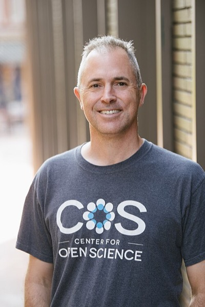

Special Report — 科学と文化
2015年、心理学100本のうち、追試で再現できたのは36本だった。科学の自己訂正機能は動いているのか——それとも、止まっているのか。
Open Science Collaboration が心理学100本の追試結果を Science に発表。「Reproducibility Project: Psychology」
同年、NASAの探査機ニュー・ホライズンズが冥王星に最接近。12月にパリ協定採択。
「100本中36本しか再現しない」を出した OSC 2015 が本記事の中心。その10年前に同じ事態を理論で予言した Ioannidis 2005、仕組みを暴いた Simmons 2011、医療への波及を示した RPCB 2021 が脇を固める。
中学の保健の教科書で、あるいはテレビの特集で、聞いたことがあるはずだ。「力強いポーズを2分とると自信ホルモンが上がる」「我慢できた子は将来成功する」「満員のバスで老人の写真を見ると歩くのが遅くなる」——どこか記憶の端にひっかかる、ああいう話。
それらの研究は、数年後、別の研究者たちが同じ手順でやり直した。結果は、ほとんど再現できなかった。
科学の土台で、静かな地殻変動が起きていた。
教科書に載っていた有名実験のうち、追試でどれが残り、どれが消えたのか——予想してから実測と照らし合わせる。その後で、何もないところから「効果あり」が生まれる仕組みを、サプリ会社の立場で体験する。
2015年8月28日、科学誌 Science に異例の論文が載った。タイトルは「Estimating the reproducibility of psychological science(心理学の再現性を見積もる)」。著者は270人。筆頭著者の欄に書かれているのは個人名ではなく、Open Science Collaboration(以下OSC)Open Science Collaboration (OSC)
Brian Nosek を中心に270人の研究者が参加した共同プロジェクト。2008年に心理学の3大誌(Psychological Science / JPSP / JEP: LMC)に載った100本の論文を、それぞれ別のチームが元の手続きに従って追試した。再現性を初めて大規模・系統的に測った試みだった。という集合体の名前だ。
彼らは2008年に一流心理学誌3誌に載った論文から100本を選び、オリジナルと同じ手順で追試した。元論文の97%が「統計的に有意」と報告していた。追試で再現できたのは、36%。効果の大きさは平均で元の半分。これが、世に出たときの数字だ。
「再現できない」というのは、科学の定義そのものを揺さぶる言葉だ。再現性再現性(replication)
同じ手順でもう一度実験して、同じ結果が得られること。科学的主張が「知識」として認められる最低条件とされる。は、科学が「個人の思いつき」から「人類の知識」に変わる境界線だと信じられてきた。100本のうち64本が境界線を越えられなかったとすれば、私たちが教科書で読んだ何が、まだ知識なのか。

Reproducibility Project: Psychology 主導者
Brian Nosek(ブライアン・ノセック, 1973–)
バージニア大学の社会心理学者。2013年に非営利の Center for Open Science を共同創設。論文の事前登録、研究計画の共有、データの公開を標準化するプラットフォーム OSF を構築した。OSC 2015 は彼の研究室から始まった4年越しの共同プロジェクトだった。
この衝撃の数字を実際に計測したのがノセックのチームなら、10年前から計算で予告していたもう一人の人物がいる。ノセックは現場から、統計と制度の不備を「データで」暴いた。もう一人は数理的に、分野の構造そのものから「理屈で」同じ結論を引き出していた。
Ioannidis の2005年の論文は、タイトルからして挑発的だった。医学系のトップジャーナル PLOS Medicine に載ったこの論文は、仮説の事前確率、統計的検出力、研究者の自由度、分野内の競争度——たった4つのパラメータだけを使って、次のように書かれていた。
It can be proven that most claimed research findings are false.
「公表されている研究結果の多くが誤りである」ということは、証明可能である。
— John Ioannidis, "Why Most Published Research Findings Are False"(2005)
2005年の時点では、これは「理論的な予測」にすぎなかった。医学研究に偽陽性が蓄積する数理的な構造がある、というモデル上の話だ。予言はどれほど当たっていたのか——その答えが、10年後に数字として返ってきた。心理学の有名論文100本を、別の研究室がゼロから追試してみたのだ。
Open Science Collaboration (2015) — 再現とみなす基準は複数あるが、追試者の主観評価でも39%にとどまった
心理学は自分の足元を疑うところから始めた。だが、同じ疑問はすぐに他の分野に波及した。6年後、がん生物学でも同種の大規模な追試が行われた。元論文の3〜5割しか再現しない、という報告は、いまや特定の分野の話ではない。
OSC 2015 / Camerer et al. 2016 (経済学) / RPCB 2021 (がん生物学) / * 物理・化学はNature誌2016年調査の自己報告値
社会心理学が最も低く、自然科学に近づくほど再現率は上がる。これは「人間が変わりやすいから」というだけでは説明できない。後で見るように、効果が小さく、測定のノイズが大きい領域ほど、偽陽性が制度的に混入しやすい構造がある。
点が対角線から下にあるほど、追試で効果が縮んだことを示す。全体として、点は対角線より下に偏っている
ここで一度、自分の直感を試してほしい。5つの有名な心理学研究を並べる。教科書で、ニュースで、TED Talkで、どこかで聞いたことがあるはずだ。それぞれ、追試で再現したと思うか——○(再現した) / △(部分的) / × (再現しなかった) で答えてから、実測結果を開いてほしい。
Study 1
パワーポージング
Carney, Cuddy, & Yap (2010) — TED Talk 視聴数2位
「力強いポーズを2分間とると、テストステロンが上がり、ストレスホルモンが下がり、リスクを取れるようになる」——この結果は、追試で再現したか?
2015年、Ranehill らが200人規模で追試したが、ホルモン変化も行動変化も観察されなかった。2016年、共著者の Dana Carney 自身が「この効果は実在しないと考えている」と公開声明を出した。Amy Cuddyの TED Talk は5,000万回再生を超えていた。
Study 2
自我消耗 (ego depletion)
Baumeister et al. (1998) — 意志の力は有限な資源である
「クッキーを我慢した人は、その後の難問に取り組む持続時間が短くなる。意志の力はバッテリーのように減る」——追試で再現したか?
2016年、23の研究室で2,000人以上を対象に追試。効果量はほぼゼロだった。自己啓発書やマネジメント書でさんざん引用された「意志の力のバッテリー」モデルは、原型のまま支持できる状態ではなくなった。
Study 3
社会的プライミング
Bargh, Chen, & Burrows (1996) — 高齢者を連想させる語を見ると歩くのが遅くなる
「高齢者連想語(しわ、杖など)を含む文を作った学生は、その後の廊下の歩行速度が遅くなる」——追試で再現したか?
2012年、Doyen らが赤外線センサーで歩行時間を正確に測って追試。効果は検出されなかった。元論文は実験者が手動のストップウォッチで測っていた。Bargh はブログで強く反論したが、その後の大規模追試も否定的だった。「プライミングの黄金期」の代表研究のひとつが倒れた。
Study 4
マシュマロテスト
Mischel (1972) — 我慢できた子は将来成功する
「4歳時点でマシュマロを目の前にして15分我慢できた子は、10年後の学業成績や30代の収入が高い」——追試で再現したか?
2018年、Watts らが10倍のサンプル(900人超)で追試。我慢と将来成績の相関は存在したが、元の半分以下。さらに、親の学歴・家庭の経済状況を統計的に統制すると、効果はほぼ消える。「自制心が未来をつくる」という物語は、「家庭環境が自制心と未来の両方をつくる」という物語に書き換えられつつある。
Study 5
ウェイソンの2-4-6課題
Wason (1960) — 確証バイアスの古典実験
「『2, 4, 6』の背後にある規則を当てる課題で、被験者の大半は自分の仮説に合う数列ばかり試し、反証を試みない」——追試で再現したか?
60年以上にわたって何度も追試されたが、正答率は2〜3割で安定している。単純で、効果が大きく、認知的な一般現象であるため、社会的プライミングのような文脈依存が少ない。全ての心理学実験が疑わしいわけではない——ここが重要だ。
Your Prediction Score
0 / 5
——
5問のうち正解は ×・×・×・△・○——つまり有名なほど残っていないことが多い。派手な結果が派手な報道を生み、報道が常識を作る。常識を揺さぶる追試結果は、10年遅れてやってくる。
研究者は嘘をついていない。それでも文献のあちこちに「効果あり」が積み上がる。その構造をいちばん近いところで体感するには、科学者ではなくサプリ会社の立場になるのが早い。「効きました!」という広告を、どうやって作れるか。
あなたはダイエットサプリ会社の商品担当。40人のモニターに1ヶ月飲んでもらった結果が返ってきた。このままでは広告が打てない。「効いた切り口」を探してほしい。
Step 1 — 観察する
全体の平均を見る。40人ぶんの平均体重変化は ほぼゼロ。このままでは「効いた」と言えない。
Step 2 — 切り口を試す
下のチェックボックスで被験者を絞り込む。組み合わせは 32 通り。どれか一つでも「効果あり」になれば広告が打てる。
縦軸: 体重変化(kg) / 横軸: 被験者
結果
対象: 40 名
−0.1 kg
平均体重変化
⚠ 効果なし切り口を選ぶ — サブグループで再分析
いま触ったこのゲームは、論文の世界に置き換えるとそのまま p-hackingp-hacking
分析のやり方を複数試し、p値(有意性の指標)が小さく出た結果だけを採用・報告する行為。意図的でなくても起こる。 と呼ばれる。分析の切り口——性別で切る、年齢で切る、外れ値を外す、従属変数を変える——が多いほど、たまたま有意が混入する確率は跳ね上がる。「どこかで効いた」を「効いた」として論文を書けば、それは偽陽性になる。
p-hacking(ピー・ハッキング)の正式な定義は「p値を"ハック"する」——つまり一つのデータセットから「どう切れば有意になるか」を何通りも試し、有意になった切り口だけを論文に書く行為だ。悪意がなくても起きる。「あれ、この分析ではダメか。じゃあ外れ値を除いて……」という試行錯誤の中で、気づけば滑り込んでいる。Simmons らは2011年に、たった4つの分析の自由度(変数の追加/データ収集を止めるタイミング/条件の統合/共変量の投入)を組み合わせるだけで、本来5%であるはずの偽陽性率が 60%を超えることをシミュレーションで示した。1/20 のくじ引きが、2/3 のくじ引きになる。
もうひとつの名前が HARKing(ハーキング)。Hypothesizing After the Results are Known の頭字語で、データを見てから仮説を立て、「最初からこの仮説だった」と論文に書く行為を指す。探索的に見つけた関係は、同じデータで「検証」してもそれは検証ではなく、後付けに過ぎない——にもかかわらず、それを検証であるかのように提示する。読者には、データが予測を確証したように見える。実際には、予測のほうがデータに合わせて書き換えられている。
どちらも、捏造ではない。研究者が意図せず、制度の緩みから滑り込んでしまう。だから真面目な人でも巻き込まれる。これが「再現性の危機」が一部の不正研究者の問題ではなく、分野全体の構造問題と呼ばれる理由だ。
偽陽性を生む三つの歯車
いま体験した通り。同じデータでも分析のしかたは何通りもある。どこかの切り口で p<0.05 が出たら、その切り口を「最初から予定していた分析」として報告する。他の試行は書かない。
一回の実験に20通りの分析が可能なら、効果ゼロのデータからでも約64%の確率で「有意な結果」が拾える。
学術誌は「効果あり」の論文を優先的に載せる。効果が見つからなかった研究は投稿すらされず、研究室の引き出しに眠る(file drawer problem)。
読者が目にする文献は「成功した研究だけ」で構成される。100の研究室が同じ実験をして、1つだけ偶然有意になっても、その1本だけが世に出る。文献全体が、成功のハイライト集になる。
結果を見てから、その結果に合う仮説を「事前の予測だった」ように書く行為。論文の冒頭で「われわれは X を予測した」と書かれていても、それは結果を見た後に書かれているかもしれない。
読者には、データが予測を確証したように見える。実際には、予測がデータに合わせて書き換えられている。Kerr (1998)Norbert L. Kerr
ミシガン州立大学の心理学者。1998年に論文「HARKing: Hypothesizing After the Results are Known」でこの用語を提唱。がこの振る舞いを命名した。
3つの歯車は、それぞれ別の層で回っている。p-hacking は一人の研究者のパソコンの中で、出版バイアスは分野全体の出版システムの中で、HARKing は論文の中の物語の中で。言葉で並べても掴みにくいので、一つずつ図で見ていく。まずは p-hacking——一回のデータ収集から、何通りの「分析の枝」が引けるのか。
偽陽性の率は、試した切り口の数だけ水増しされる
p-hacking は、一人の研究者が一つのデータセットの中で起こす話だった。次は視点をもっと広げる——20の研究室が同じ実験をしたら何が起きるか、という話だ。偶然1つだけ有意になった研究だけが世に出て、他の19本はそもそも投稿されない。
効果ゼロの薬でも、20の研究室が試せば偶然1つ p<0.05 が出る(=5%)。出版されるのはその1本
引き出しから消えるのは、研究だけではない。論文の中にある仮説もまた、書き換えられる。最後の歯車、HARKing は、p-hacking ほど派手ではないが、文献全体の「予測の的中率」を静かに底上げしていく。
順序を入れ替えるだけで、偶然が理論に化ける
この3つは独立に起きるのではない。p-hackingで作った「有意」を、HARKingで「最初から予測していた」と装い、出版バイアスが成功したものだけを選び出す。三つの歯車は噛み合って回っている。
1998
Kerr が「HARKing」を命名
結果を見てから仮説を書く振る舞いが、心理学で広く行われていることを指摘。まだ誰も動かなかった。
2005
Ioannidis「Why Most Published Research Findings Are False」
公表された医学研究の大半が誤りである、と数理的に示した。いまやメタ科学の出発点とされる。
2011
Bem「Feeling the Future」事件
心理学の一流誌 JPSP に「予知能力」を示唆する論文が掲載される。追試は失敗。この騒ぎが業界の危機感を決定的にした。
2011
Simmons, Nelson, & Simonsohn「False-Positive Psychology」
分析の自由度を悪用すれば、どんな仮説でも p<0.05 を作れることを実証。後に「p-hacking」と呼ばれるようになる。
2015
OSC「Reproducibility Project: Psychology」
270人の研究者が4年かけて100本を追試。再現率36%。Science 誌掲載。「再現性の危機」が一般用語になった瞬間。
2016
Many Labs 3・自我消耗の大規模追試
23研究室・2000人以上。自我消耗の効果は検出されず。教科書の書き換えが始まる。
2021
RPCB 公表 — がん生物学は46%
8年がかりの追試プロジェクトの最終結果。医療と近い分野でも、心理学と同水準の問題が確認された。
再現性の危機、と呼ばれたこの出来事の本当の意味は、「心理学はダメだった」ではない。心理学が、自分のダメさを率先して可視化したということだ。同じ装置を他の分野に向けたら、同じものが出た。出してしまった。
そして出したあと、何が起きているか。事前登録(プレレジ)、データ公開、多重比較補正、追試ジャーナル、効果量の推定重視——ここ10年で、心理学の標準的な手続きは大きく変わった。2015年以降に書かれた心理学論文を読むときは、かつてとは違う目で読む必要がある。
One of the reasons for its success is that science has a built-in, error-correcting machinery at its very heart.
科学が成功している理由のひとつは、その心臓部に エラー訂正の仕組み が組み込まれていることだ。
— Carl Sagan, The Demon-Haunted World: Science as a Candle in the Dark (1995)
文化の中に現れた「再現性の危機」
Amy Cuddy の TED Talk 『Your Body Language May Shape Who You Are』(2012)
5000万回以上再生。パワーポージングが崩れた後も動画は削除されず、ビジネス書・自己啓発本での引用は減ったが消えてはいない。常識の訂正には、研究の訂正よりはるかに長い時間がかかる。
John Oliver『Last Week Tonight』"Scientific Studies"(2016)
再現性の危機と出版バイアスをプライムタイムのコメディ番組で20分にわたって解説。「科学ニュースを信じる前に、再現されたかを確認してほしい」を一般視聴者向けに伝えた最初期の大衆番組。
『Nature』誌アンケート(2016)
1,576人の研究者の70%以上が「他の研究者の実験を再現できなかった経験がある」と回答。「危機」は心理学者だけの感覚ではないことが数字で出た。
Estimating the reproducibility of psychological science
再現性の危機を決定づけた論文。著者は270人、筆頭著者は集合体名義。Science誌のサイトで全文無料公開。
Why Most Published Research Findings Are False
OSC 2015 の10年前。偽陽性が科学文献に蓄積する構造を数理的に示した。オープンアクセス。メタ科学の出発点。
False-Positive Psychology: Undisclosed Flexibility in Data Collection and Analysis
「ビートルズの曲を聞くと年齢が若返る」という露骨にあり得ない仮説でp<0.05を作って見せた。p-hacking の教科書。
Investigating the replicability of preclinical cancer biology
8年がかりでがん生物学53本を追試。再現率46%、効果量は元の平均15%。医療への含意は深刻。
Assessing the Robustness of Power Posing
パワーポージングの大規模追試(N=200)。ホルモン変化も行動変化も検出されなかった。Carney 自身の撤退声明もこの論文がきっかけ。